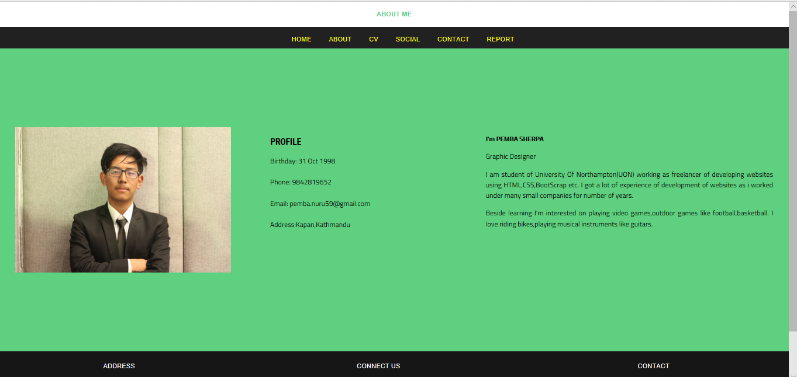
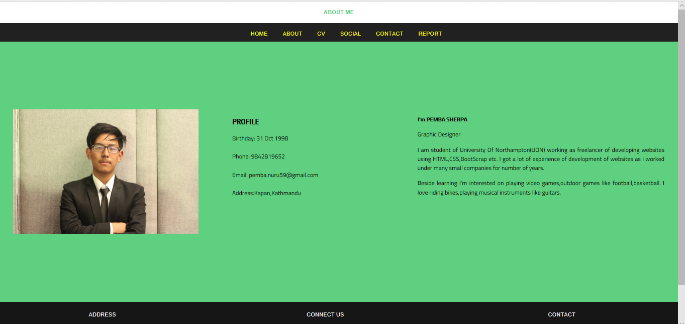

Cover Page
| S.No | Topic | Contents |
|---|---|---|
| 1 | Webpages |
|
| 2 | Introduction | Introduction of Web Development |
| 3 | UI Design | Description of Web design |
| 4 | Wireframe | Wireframes of Webpages |
| 5 | Experience | Experience On Learing Web Development |
| 6 | Validation Evidence | Evidence of HTML |
| 7 | References | References |
Introduction
Web Programming or development is the way of creating a web applications like facebook, twitter etc. Basically web development is not hard so it is the best form of coding for beginners to learn. It is easy to started that whenever we enters the code we get instant results. Not only that we can find many online websites like w3schools which provides free training to learners. So learning web development is very important to us that we can also get job easily and it is not hard as programming. Now days all the companies wish to have their own webpage so the demand of web developer is high. Learning web development helps to boost our skills and can help to move into better position in the future.
UI Design
To make the website look attractive a good design and layout is required. Basically UI refers to design of graphical user interfaces such as mobiles, portable devices and pc. Basically design differs from the devices like mobile and pc. In pc the same website can look more attractive but the same website may not look attractive on mobile screens. So UI is used to make design and layout for different devices. Basically while making the website design for our assignment we took many design from many websites like wix, themeforest. But selecting the website template was difficult as every template looked very attractive and interesting. But among them first we selected the template with no mobile responsive but it was not used as we can find the mobile users more than computer users. So the main priority was to choose the design which is mobile responsive. A mobile responsive webpage look more attractive on mobile devices.So we choose a template with a mobile responsive so that whenever the user searches our website through mobile it look more attractive to them. With everyone agreement we choose the design and start to develop the page using HTML and CSS. Everyone in group had same design but the code among us are different.
Wireframe and Mockups
 

Experience
Before few months ago I had no idea about web development like HTML,CSS. I used to know little about html but CSS was completely new to me. Later on when I started to learn about CSS I found it more interesting .When I used to use HTML the page were not attractive but after using CSS properties the page were looking beautiful and attractive. CSS is used to define styles for web pages, including the design, layout and variations in display for different devices. To attract the people towards our page a website requires a good animation, transition, mobile responsive etc. Now days due to rapid growth of technology we find that there are more mobile users than the computer users. Mobile responsive is used to make web page look good on mobile devices. After learning about mobile responsive now every website looks attractive either on portable devices or personal computers. So I find web development more interesting and I learn through many websites like w3schools, treehouse which helped me a lot of upgrade myself in web development. During our first term we learn about HTML, CSS and their properties. We were given a assignment to develop a CV website using HTML and CSS(Cascading Style Sheets). After the completion of my assignment I had a great experience on web development. I knew more about media queries, responsive animation transition which helps to make design, layout of page look more attractive. Finally I also knew about the importance of CSS in web development and if we keep researching about web development it makes it more and more interesting to learn about web development.
Validation
References